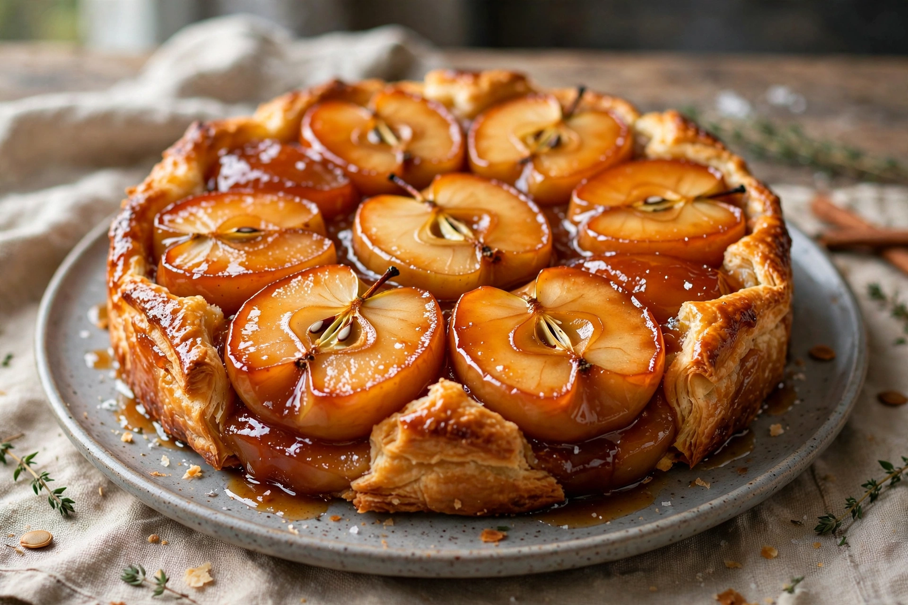

Tarte Tatin
From Wikipedia, the free encyclopedia

The tarte Tatin is an upside-down French pastry in which apples are caramelised in butter and sugar in a heavy pan, covered with pastry, baked, and inverted onto the plate so the fruit — burnished, jammy, deep amber — becomes the top. It comes from the Hôtel Tatin in Lamotte-Beuvron, in the Sologne, where the Tatin sisters ran the kitchen in the late 19th century. Legend says Stéphanie Tatin, flustered in a busy service, overcooked the apples for a pie and rescued them by laying the pastry on top and baking the pan as it stood — or, in the other telling, dropped a finished tart and served it upside down rather than waste it.
Fame
Accident or not, the tart travelled to Paris — the restaurant Maxim's made it famous, keeping its method a small mystery for years — and the food writer Curnonsky, who championed France's regional dishes, celebrated it as a glory of the Sologne. Hunters' lunches built its season: it is an autumn and winter tart, best with firm, tart apples that hold their shape in caramel (modern cooks often use Golden Delicious or Braeburn, traditionalists a local Reinette). It is served warm, with crème fraîche to cut the sweetness.
Method and descendants
The technique is the dessert: butter and sugar are melted in a cast-iron pan, apple halves packed in dome-side down, cooked until the caramel darkens, then pastry is draped over, baked, rested briefly, and flipped with commitment — the moment of inversion is the dish's theatre. Pear, quince, peach, banana and even tomato or shallot Tatins descend from it, all obeying the same law: fruit caramelised under pastry, served as its own sauce.